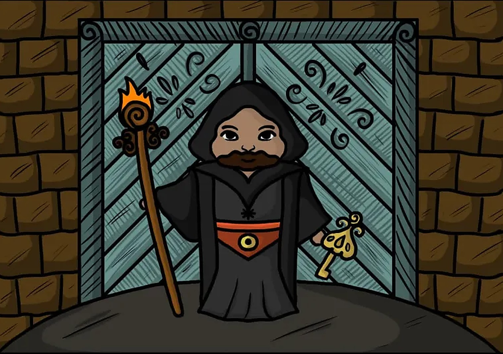
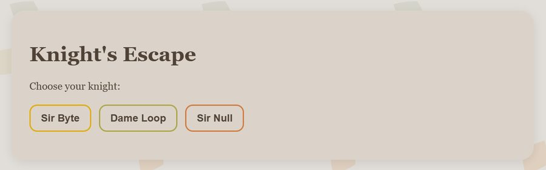
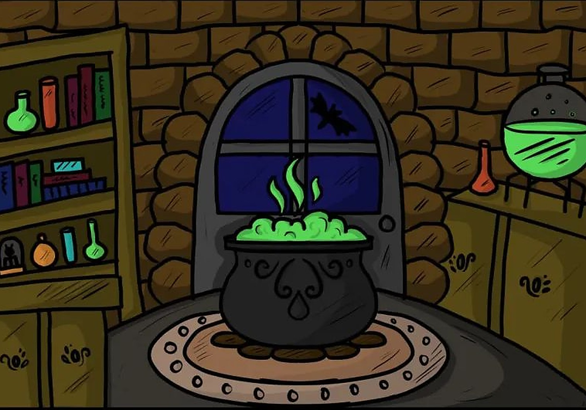
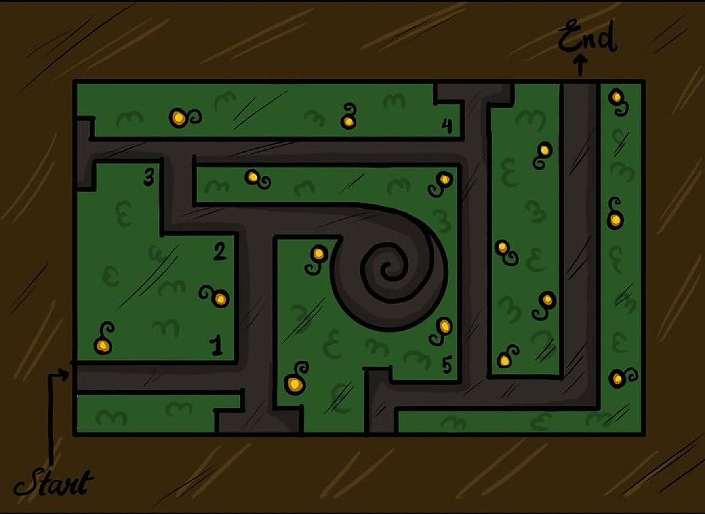

Most of us started with small tech backgrounds, and together we built a beautiful, fully working game.
"Where she started" is summed up from our kickoff survey.
The core team

The warlock · drawing by Tvishaa
Tvishaa
Design team · IT / CS
Our painter. She designed the game, then drew every room of it.
Where she started
She joined after our kickoff survey, and really stepped up.
Built: the Figma design roadmap, every drawing in the game, the planning sketches, and the warlock's name ideas.

Shirley's light fall design · screenshot of her work
Shirley
Design team · IT
She gave the game its motion. Every button you press lifts because of her.
Where she started
New to coding, and learning C, HTML/CSS and Python.
Built: the page animations (buttons and Hall doors lift when you point at them) and the light fall look.
"proud of how it all turn out to be!"

The Alchemy Lab, where Leslie's spell is brewed · drawing by Tvishaa
Leslie
Dev team · Actuarial Science, minors in Statistics and Health Sciences
Not a CS major, and she grew so much as a coder.
Where she started
Some Python and PyGame, and she'd already built an app and a game.
Built: the Alchemy Lab spell (ending on encapsulation), the name LabyrinthLearn, the mistake counter and the weak-spot scroll.
"I built the ... level using encapsulation and I am proud of learning it"

LabyrinthLearn, where Sanjana wrote turns 3 to 5 · drawing by Tvishaa
Sanjana
Dev team · IT
She laid the groundwork: her early work and OOP research shaped what every chamber teaches.
Where she started
C, Java and some Python, and she wanted to build an app or website with AI for the first time.
Built: the OOP research, LabyrinthLearn turns 3 to 5, the wrong-answer explanations, the maze counter and keys as flashcards.
"I'm proud that my outcome was successful."
The castle door, where the quest starts · drawing by Tvishaa
Katrina
Project lead · Computer Science / Robotics
Our project lead and mentor. She kept the quest on track from kickoff to showcase.
Where she started
Into AI, web dev, ML, project management, embedded hardware and business proposals, and wanted to build a hardware/software solution.
Built: the starter code, the task guides and code reviews.
"I'm so thankful for this team."
The story
Oct 4 · BrainstormReal problems we'd run into as UCF students: a study tool, a professor finder, campus transportation, project matching.
Lots of pollsThe study tool won. More polls and research narrowed it to OOP, taught through a game.
Tvishaa joinsSimone, the president of Girls Who Code at UCF, added Tvishaa. Our theme poll tied, and her vote made it an escape room.
The blueprintTvishaa mapped the whole game in Figma, then drew it. Her drawings brought our ideas to life.
Oct 24 · First CouncilWe voted: keys become flashcards, a weak-spot scroll, hints that explain, a sly trickster warlock. Leslie named LabyrinthLearn.
Nov 14 · Final meetingWe chose Tvishaa's drawings for the look and named it Knight's Escape: An OOP Quest.
Along the way, our comfort with classes and objects went from 2.5 to 3.7 out of 5 (team average from our check-ins), and everyone who checked in more than once ended higher than she started.